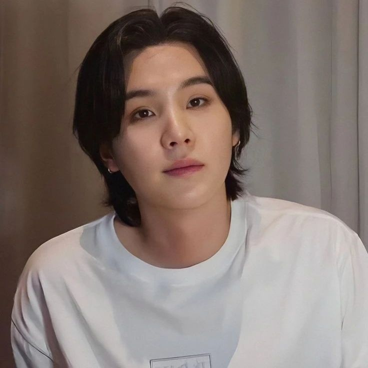

Min Yoongi

Min Yoongi, conocido mundialmente como Suga, nació el 9 de marzo de 1993 en Daegu, Corea del Sur. Su vida dio un giro radical a los 13 años cuando escuchó "Fly" de Epik High, canción que despertó en él una profunda pasión por el hip-hop y lo motivó a seguir una carrera musical. Antes de unirse a BigHit Entertainment, Yoongi ya se desenvolvía en la escena underground del rap bajo el nombre de Gloss y formaba parte de un grupo llamado D-Town. Durante su adolescencia, trabajó a tiempo parcial en un estudio de grabación desde los 17 años para aprender sobre producción musical, vendiendo sus propias composiciones y beats, aunque muchas veces no recibía pago por ellos. Esta etapa fue particularmente difícil económicamente, llegando a tener que elegir entre comprar comida o pagar el transporte.
En 2010, participó en la audición de rap "Hit It" organizada por BigHit Entertainment, obteniendo el segundo lugar. Inicialmente, Yoongi quería unirse a la compañía como productor, pero el CEO Bang Si-hyuk lo convenció de debutar como idol en un nuevo grupo de hip-hop. Tras tres años de intenso entrenamiento, finalmente debutó como Suga, el rapero principal de BTS, el 13 de junio de 2013. Como solista, adoptó el alter ego de Agust D (que surge de invertir las sílabas de "DT Suga", haciendo referencia a "Daegu Town"), bajo el cual ha lanzado dos aclamados mixtapes: Agust D (2016) y *D-2* (2020), donde explora temáticas más personales y crudas alejadas del sonido principal de BTS.
A lo largo de su carrera, Yoongi se ha consolidado como uno de los productores más respetados de la industria del K-pop. Es miembro de pleno derecho de la Asociación de Derechos de Autor de Música de Corea (KMCA) y ha compuesto y producido para numerosos artistas de renombre como IU ("eight"), PSY ("That That"), Halsey, Heize, Epik High y Suran, con quien ganó un premio en los Melon Music Awards por "Wine". Reconocido por su habilidad lírica y su velocidad en el rap, es considerado el tercer idol rapper más rápido de Corea del Sur. Fuera de los escenarios, es dueño de un perro Poodle Toy llamado Min Holly, tiene un hermano mayor llamado Min Geumjae y se rumorea que podría tener ascendencia del poderoso clan real Yeoheung Min. Apodado cariñosamente como "el abuelo" por sus compañeros debido a su amor por dormir y su personalidad a veces gruñona, Yoongi también es un apasionado del baloncesto (llegó a recibir una oferta para jugar profesionalmente), toca el piano desde joven (instrumento al que dedicó su canción "First Love") y disfruta de la fotografía. Conocido por su humor seco y su personalidad directa, pero también por su inmenso talento y dedicación, Min Yoongi continúa dejando una huella imborrable en la música global.